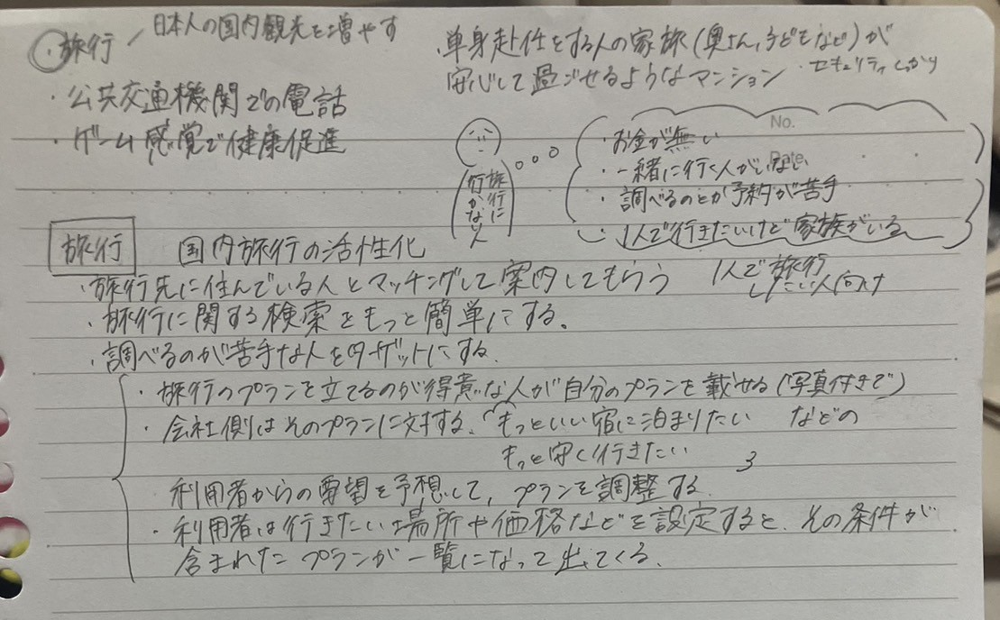

ビジネスコンテストメンバー
北川貴惟
大谷陸人
吉田晴香
寺瀬歩未
高橋理子
佐伯隼人
グループワーク



私たちの班では、各自の夏休み課題を踏まえ共通点から解決したいビジネスを考えた。夏休み課題では、それぞれ旅行に関する解決案が多数であった。
それによって、国内旅行の活性化を図るアイディアを考えることにした。また、もう一つのきっかけとして生活定点が含まれる。「ここ2年で最も下降」
のところに一泊以上の国内旅行にいったヒトは46.9％であった。さらに見てみると年々と下降傾向にある。これらを改善できるような策を私たちの班で考えたい。
ビジネスモデル図解


国内旅行を活性化させるにあたって始めにビジネスモデル図解を考えた。私たちの班は授業内では時間が足りなかったため、各自で考えてもらうことにした。
その結果、2パターンのビジネスモデル図解がでた。正直、ビジネスモデル図解のお手本を参考にはしたものの難しく正しく表せているか分からない。
ターゲットカスタマーは旅行プランを考えるのが大の苦手な人である。アプリケーションもしくは、ウェブサイトを活用して国内旅行の活性化を目指す方針である。
まとめ
まだ初めの段階ではあるが、時間は全くもって足りない。しかし、後期のビジネスコンテストを乗り越えるにあたって組んだこの
6人でどこまでビジネスモデルを引き出せるかとても楽しみである。1つ1つの授業を大切に最後まで諦めずにより良いものにしていきたい。
最後に、普段何気なく使っているサービスがどのような仕組みで成り立っているのかこの機会で改めて勉強になった。